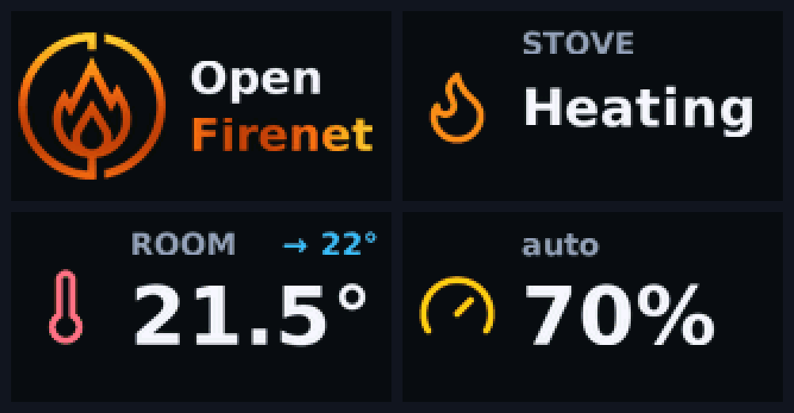
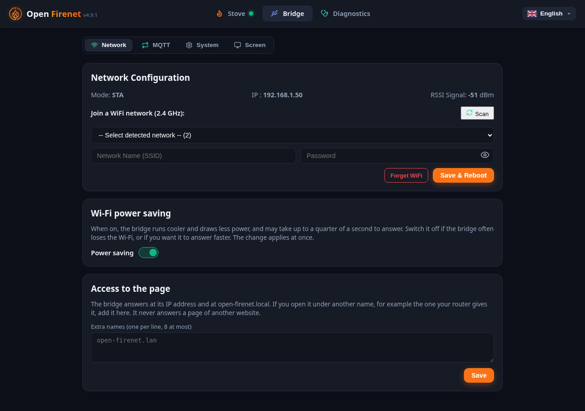
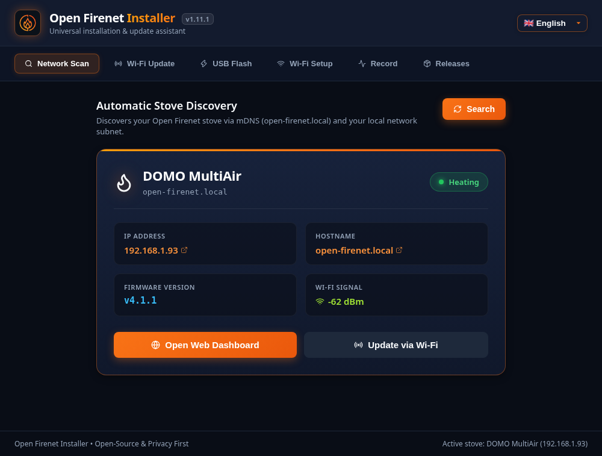

Controllo locale per stufe a pellet RIKA e ANIMO
Open Firenet sostituisce la chiavetta RIKA Firenet o ANIMO Wi-Fire con una scheda ESP32-S3. La stufa ottiene una pagina web locale, un'API REST, MQTT e un'integrazione per Home Assistant. Senza account cloud, senza bisogno di connessione Internet.
Siete nuovi? Come funziona · Scarica l'installer

http://open-firenet.localFunzionalità
Controllo dalla rete locale
Accensione/spegnimento, modalità operativa, potenza termica, temperatura impostata, programmazione settimanale, antigelo e ventilatori MultiAir per le stufe predisposte.
Tutti i dati rilevati dalla stufa
Temperature, consumo di pellet, ore di funzionamento, conto alla rovescia per la manutenzione, codici di errore e avviso: fino a 88 parametri con le denominazioni originali RIKA.
Integrazione domotica universale
Integrazione dedicata per Home Assistant, API REST completa e supporto MQTT per Jeedom, openHAB, Node-RED, Domoticz e altri sistemi.
100% locale
Il bridge comunica con la stufa via USB e con voi tramite la rete Wi-Fi. Nessun dato viene inviato a server esterni.
Schermo sulla chiavetta
Con un modulo LilyGO T-Dongle-S3 o un ESP32-S3 Pocket Dongle, lo stato della stufa e la temperatura ambiente vengono visualizzati direttamente sullo schermo integrato. Scopri lo schermo.

Tre componenti
Firmware
Viene eseguito sull'ESP32-S3 collegato alla stufa. Fornisce l'interfaccia web locale e l'API REST.
Installer
Applicazione per Windows, macOS e Linux: installa il firmware, configura il Wi-Fi ed effettua gli aggiornamenti over-the-air.
Home Assistant
Termostato completo, ventilatori, interruttore orario, sensori e diagnostica, installabile tramite HACS.
Stufe compatibili
L'elemento determinante è la versione del firmware della scheda madre della stufa, visualizzata nel menu Info sul display della stufa. Il bridge la rileva automaticamente.
| Firmware stufa | Stato | Note |
|---|---|---|
| 2.30 | Supportato | Tutti i parametri e le impostazioni, compreso il funzionamento a legna (un riscontro finora) |
| 2.29 | Supportato | Tutti i parametri e le regolazioni |
| 2.28 | Supportato | Tutti i parametri e le regolazioni |
| 2.26 / 2.27 | Supportato | Tutti i parametri e le regolazioni |
| 2.25 | Parziale | Supporto preliminare: stato, temperature e regolazioni principali, orario con una fascia al giorno. L'accensione della stufa non è ancora stata provata |
| Precedente a 2.25 | Non supportato | Fate aggiornare la scheda madre della stufa alla 2.25 o successiva |
Dettagli completi sulla compatibilità
Panoramica dell'interfaccia



